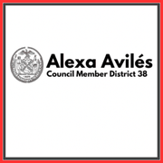
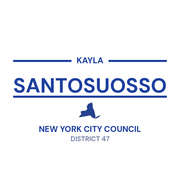

The district
 City Council
City Council State Senate
State Senate Congress
Congress Subway
Subway Citi Bike
Citi Bike NYC Ferry
NYC FerryTurn layers on and off. Tap an official's logo or a board's seal for its page. Zoning and land use lot by lot are on the land use map.
About
Assembly Member Lester Chang represents State Assembly District 49. It sits in Brooklyn.
The district overlaps community boards Brooklyn 7, Brooklyn 10, Brooklyn 11 and Brooklyn 12.
It is policed by the 62nd, 66th, 68th and 72nd Precincts.
It overlaps council districts 38 and 43 and Senate districts 17, 22 and 26.
Members of the State Assembly serve two year terms.
Next on the ballot in November 2026. Find your poll site and sample ballot there, or see what is coming up on the calendar.
Assembly District 49 in numbers
U.S. Census Bureau, American Community Survey 2019-2023 5-year estimates.
Bills
Committees
Contact
Overlap
Community boards


Bars show how many of the district's election districts fall in each board.
Overlapping elected officials






| Brooklyn CB 11 | 45% of the assembly district | 28% of it |
| Brooklyn CB 10 | 36% of the assembly district | 21% of it |
| Brooklyn CB 12 | 11% of the assembly district | 7% of it |
| Brooklyn CB 7 | 9% of the assembly district | 6% of it |
| 62 Precinct | 45% of the assembly district | 28% of it |
| 68 Precinct | 36% of the assembly district | 21% of it |
| 66 Precinct | 11% of the assembly district | 7% of it |
| 72 Precinct | 9% of the assembly district | 5% of it |
| Sector 62A | 39% of the assembly district | 82% of it |
| Sector 68B | 31% of the assembly district | 71% of it |
| Sector 66C | 10% of the assembly district | 27% of it |
| Sector 72D | 7% of the assembly district | 39% of it |
| Sector 62B | 5% of the assembly district | 16% of it |
| Sector 68D | 4% of the assembly district | 12% of it |
| Sector 72C | 2% of the assembly district | 7% of it |
| School District 20 | 96% of the assembly district | 26% of it |
| School District 15 | 4% of the assembly district | 1% of it |
| Council District 43 | 58% of the assembly district | 51% of it |
| Council District 38 | 40% of the assembly district | 17% of it |
| Council District 47 | 2% of the assembly district | 1% of it |
| Senate District 17 | 84% of the assembly district | 32% of it |
| Senate District 26 | 12% of the assembly district | 3% of it |
| Senate District 22 | 5% of the assembly district | 1% of it |